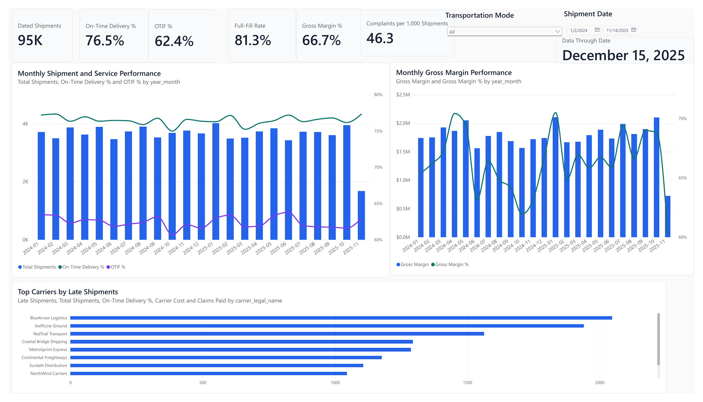

ON-TIME DELIVERY
76.5%59,986 of 78,452 eligibleSUPPLY CHAIN ANALYTICS · PORTFOLIO CASE STUDY
Where is service breaking across the logistics network?
A shipment-grain control tower connecting transportation, warehouse, finance, claims, CRM, and customer feedback data to expose service risk and prioritize action.
Executive answer Late delivery and incomplete fulfillment are the clearest service gaps; a small set of carrier and lane segments concentrates the most actionable risk.
OTIF
62.4%46,321 of 74,198 eligibleFULL-FILL
81.4%10,434 on-time but underfilledREVENUE
$72.3M$48.3M gross marginCUSTOMER SIGNAL
−18.8NPS · 3.4% survey coverageDECISION BRIEF
Five findings that focus the operating conversation
Rates are paired with eligible denominators and volume guardrails, so the ranking does not confuse missing data or tiny segments with operational priority.
Nearly one in four eligible shipments is late. OTIF falls further to 62.4% when fulfillment is included.
Late shipments carry a 6.0% complaint rate versus 2.5% for on-time shipments.
The lowest high-volume carrier OTD rate includes 957 late shipments across 3,511 eligible moves.
The weakest volume-qualified lane delivered only 229 of 412 OTIF-eligible shipments in full and on time.
Delivered rows without an actual delivery date are the largest immediate OTD coverage issue.
DASHBOARD WALKTHROUGH
From executive pulse to exception queue

ACTION PLAN
Recommended 30 / 60 / 90-day sequence
Restore metric coverage
Assign owners to missing delivery timestamps, OTD/OTIF completeness, and full-fill exceptions. Publish eligible counts beside every service rate.
Concentrate reviews
Review high-volume carrier and lane combinations using rate, failure count, cost, claims, and complaints together.
Pilot network changes
Test targeted routing-guide, service-level, or fulfillment changes and evaluate pre/post service and cost before scaling.
METHOD & GOVERNANCE
Built for traceability, not just presentation
Python creates deterministic source data and quality profiles. DuckDB SQL reconciles operational systems into a governed shipment-grain star schema. Reusable KPI views feed both Power BI and browser-ready exports.
- 01Ingest and profile
Transportation, warehouse, invoice, claims, CRM, and survey sources.
- 02Reconcile at shipment grain
Aggregate one-to-many facts before joining to prevent fan-out.
- 03Validate every layer
Executable quality gates test keys, relationships, reconciliation, and KPI logic.
- 04Publish decision surfaces
Power BI semantic model, Streamlit companion, and documented recommendations.